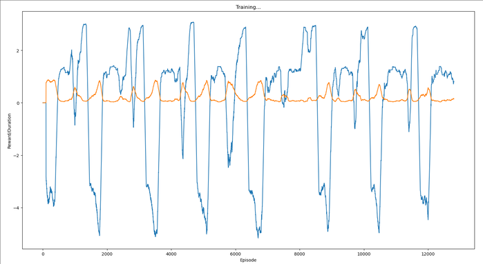

author: niplav, created: 2023-12-04, modified: 2023-12-04, language: english, status: notes, importance: 7, confidence: certain
.
Code based on this tutorial, trying to implement the experiment detailed in Yudkowsky 2017.
